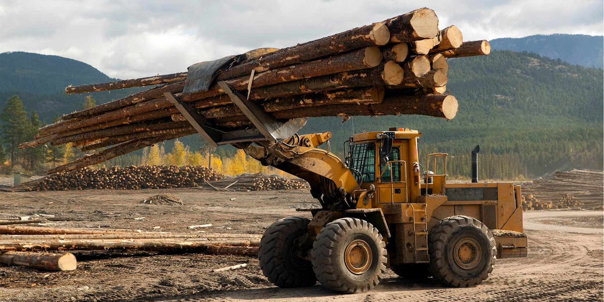

When trees are cut down and burned or allowed to rot, their stored carbon is released into the air as carbon dioxide. And this is how deforestation and forest degradation contribute to Climate Change. According to the best current estimate, deforestation is responsible for about 10 percent of all global warming emissions.
Deforestation is a key contributor to human-caused climate change. When forests are cleared or burnt, they release the carbon they store. Removing trees also diminishes an important carbon “sink” that takes up CO2 from the atmosphere
Deforestation can also affect temperatures through its effect on a range of different physical processes. These effects occur at local and regional scales, but can have global repercussions.
Burning fossil fuels, in combination with destruction of carbon sinks due to deforestation and other activities, has contributed to more and more carbon dioxide building up in the atmosphere – more than can be absorbed from existing carbon sinks such as forests. The build-up of carbon dioxide in the atmosphere is driving global warming, as it traps heat in the lower atmosphere. Carbon dioxide levels are now at their highest in human history.
Deforestration
